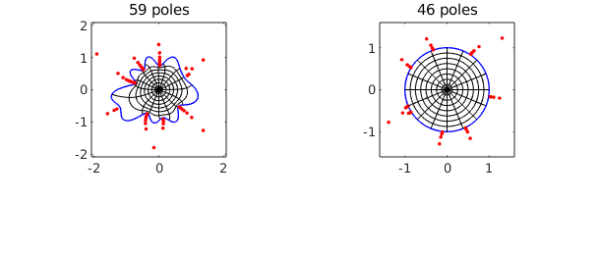
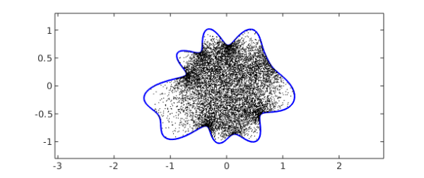

Chebfun has a new command conformal for computing conformal maps. As input it takes a periodic chebfun defining the boundary curve of a smooth simply-connected region $\Omega$ in the complex plane. For example, here is the unit circle:
C = chebfun('exp(1i*pi*t)','trig');
That's not very interesting, so let's multiply the radius by a smooth random function:
rng(0) C = C.*(1+.15*randnfun(.2,'trig'));
To compute and plot the conformal map of $\Omega$ onto the unit disk $D$, normalized by default by $f(0)=0$ and $f'(0)>0$, we type
tic [f, finv] = conformal(C,'plots'); toc
Elapsed time is 2.882060 seconds.

The red dots show a very interesting aspect of the numerical method used to represent these maps. The objects f and finv are function handles corresponding to rational functions computed by the AAA rational approximation command aaa, rational approximations to the conformal maps from $\Omega$ to $D$ and from $D$ to $\Omega$, respectively. For this example, we see that a rational function of degree $59$ (i.e., 59 poles and zeros) is enough to achieve the default tolerance of about 1e-5 in one direction and degree $46$ is enough in the other. The red dots mark poles of f on the left and finv on the right, and their clustering near the boundary reflects the powerful role that rational functions can play in problems like this. See [1] and [3].
Because these rational representations are so compact, the maps can be applied with amazing speed. For example, here are 10,000 uniformly distributed random points in the unit disk:
W = 2*rand(2e4,1)-1 + 2i*rand(2e4,1)-1i; W = W(abs(W)<1); W = W(1:1e4);
We can compute the images in $\Omega$ of all 10,000 points in around one hundredth of a second:
tic, Z = finv(W); toc clf, plot(C,'b'), hold on plot(Z,'.k','markersize',3), hold off ylim([-1.3 1.3]), axis equal
Elapsed time is 0.002664 seconds.

Since f and finv are rational functions, they are certainly conformal maps (assuming they are one-to-one); the accuracy question is only whether they map $\Omega$ to $D$. As a simple test of this, here are 1000 points on the boundary curve $C$:
W = C(linspace(-1,1,1001));
The images come very close to absolute value $1$, as required:
Z = f(W); max_deviation_from_circle = norm( abs(Z)-1 , inf)
max_deviation_from_circle =
6.235034343493595e-06
As a test of how accurately f and finv are inverses of each other, we compare the computed preimages of these points Z to the original set of points W:
W2 = finv(Z); max_back_and_forth_error = norm( W-W2 , inf)
max_back_and_forth_error =
2.709618716889505e-05
The algorithm used by conformal is a discretization of the Kerzman-Stein integral equation [2], and our code is a descendant of one written by Anne Greenbaum and Trevor Caldwell of the University of Washington. This code only works for smooth domains, but we hope to introduce capabilities for regions with corners in the future.
To learn more about conformal, type help conformal. For example, an optional additional argument can be used to specify a center point in $\Omega$ other than $0$. One can also tighten the tolerance, though the exponential distortions inherent in conformal maps (the "crowding phenomenon") make it hard to get close to machine precision except for very simple regions.
[1] A. Gopal and L. N. Trefethen, Representation of conformal maps by rational functions, Numer. Math. 142 (2019), 359-382.
[2] N. Kerzman and M. R. Trummer, Numerical conformal mapping via the Szegö kernel, J. Comput. Appl. Math. 14 (1986), 111-123.
[3] L. N. Trefethen, Numerical conformal mapping with rational functions, Computational Methods and Function Theory (2020), 1-19.